Como ler um arquivo XML utilizando o SAX (Simple API for XML) com Java
Antes de iniciar, sugiro que acesse o tutorial de primeiros passos.
Supondo que já realizou os primeiros passos e está com o Eclipse aberto, crie um novo projeto Maven.
Na área de "Project Explorer": Clique com o botão direito do mouse e selecione New > Other
Digite "maven" na área de pesquisa da nova janela, selecione "Maven Project" e clique em "Next >"
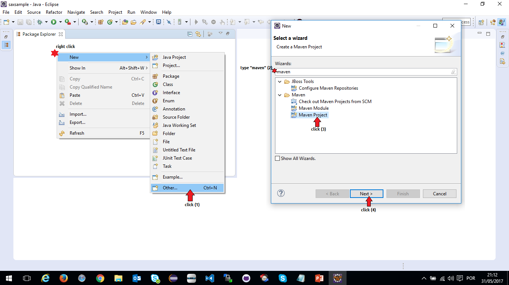Marque a opção "Create a simple project" para criar um projeto do zero e, em seguida, clique em "Next >"
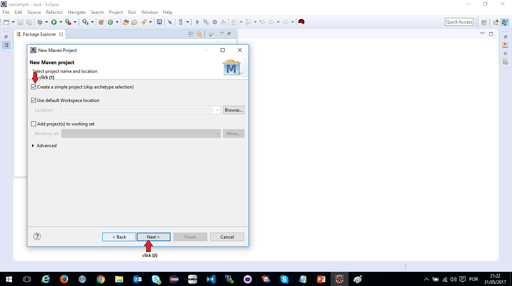Preencha os campos conforme a imagem abaixo e clique em "Finish"
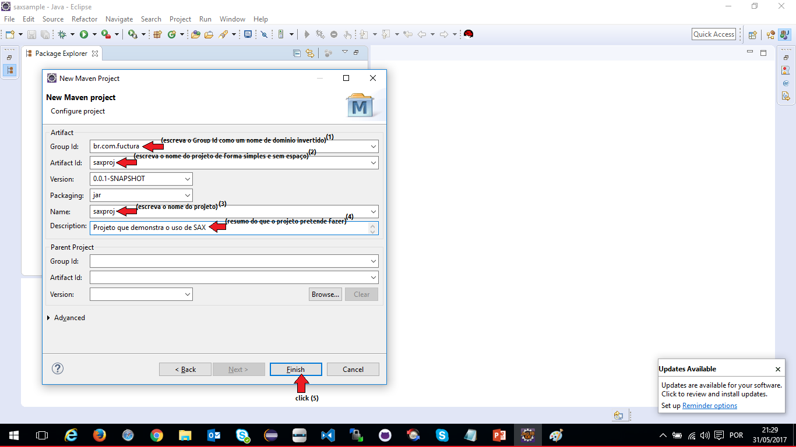Aguarde o Maven criar o projeto...
Abra o arquivo "pom.xml", selecione a aba "Dependecies" e clique em "Add" para adicionar a dependencia para usar SAX conforme a imagem abaixo e, em seguida, clique em "Ok"
Lembre-se de apertar "ctrl+S" para salvar o arquivo pom
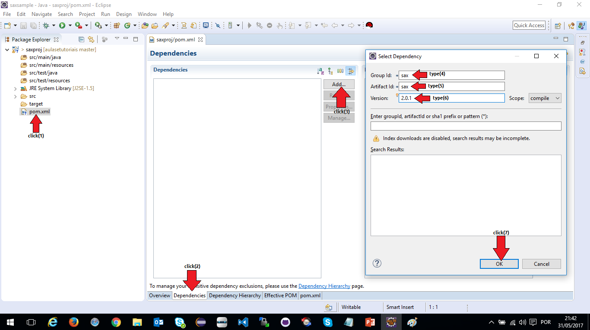Crie o arquivo XML que será lido
Clique com o botão direito do mouse sobre o projeto, siga o fluxo "New > Other", digite "xml file" na caixa de pesquisa e selecione a opção "XML File" que aparece conforme a imagem abaixo.
Clique em "Next >"
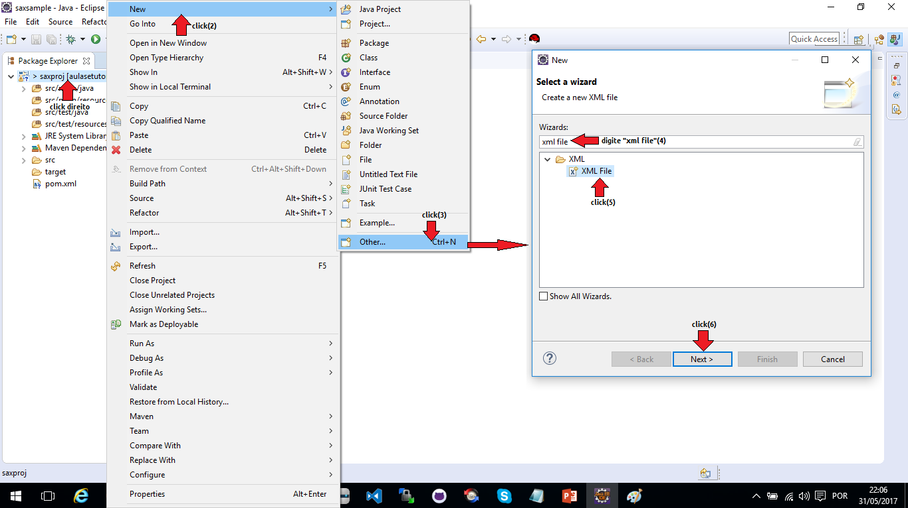Digite o nome do arquivo conforme mostrado abaixo e clique em "Next >"
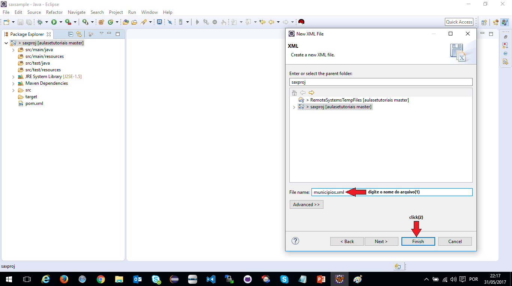Preencha o arquivo com as informações dentro de suas tags conforme a imagem abaixo.
Salve o arquivo apertando "ctrl+S"

Crie os pacotes que serão usados para separarmos as classes da aplicação dentro da pasta main (src/main/java) conforme a imagem abaixo.
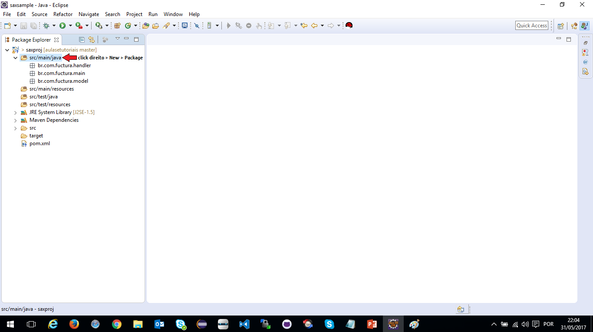Crie a classe "Municipio" dentro do pacote "model" conforme a imagem abaixo.
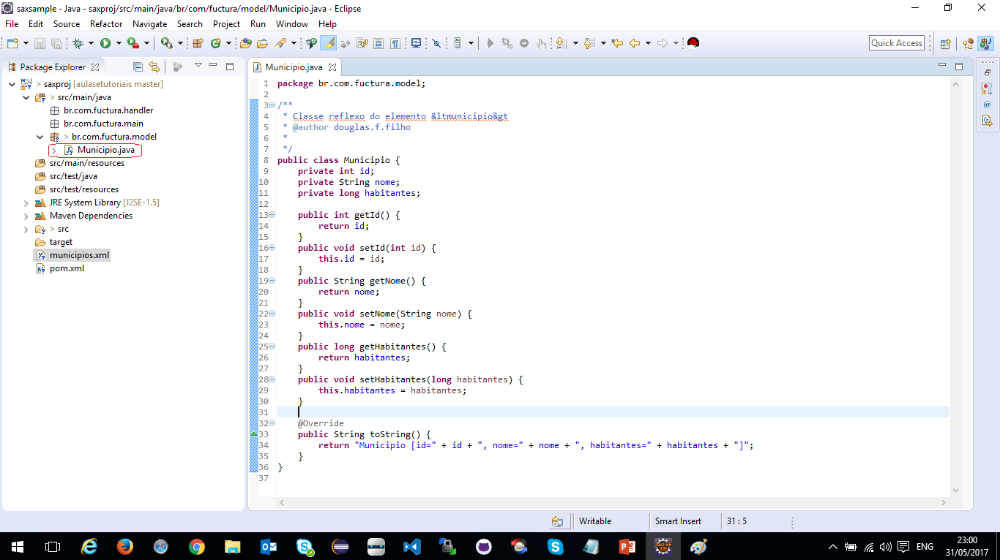Crie a classe "Municipios" dentro do pacote "model" conforme a imagem abaixo.
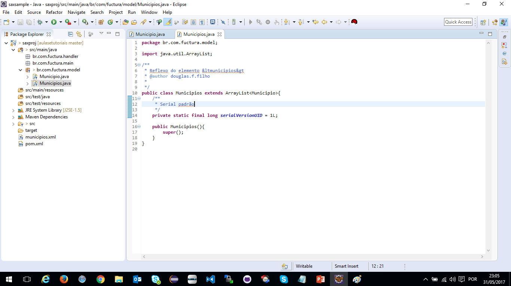Crie um manipulador da API SAX o qual será responsável por ler o arquivo XML dentro do pacote "handler"
Este manipulador é uma classe que estende a classe DefaultHandler da API SAX
Ele também deve ter um método "parse(arquivo)" o qual irá ser usado para converter o arquivo XML em uma lista de municipios. 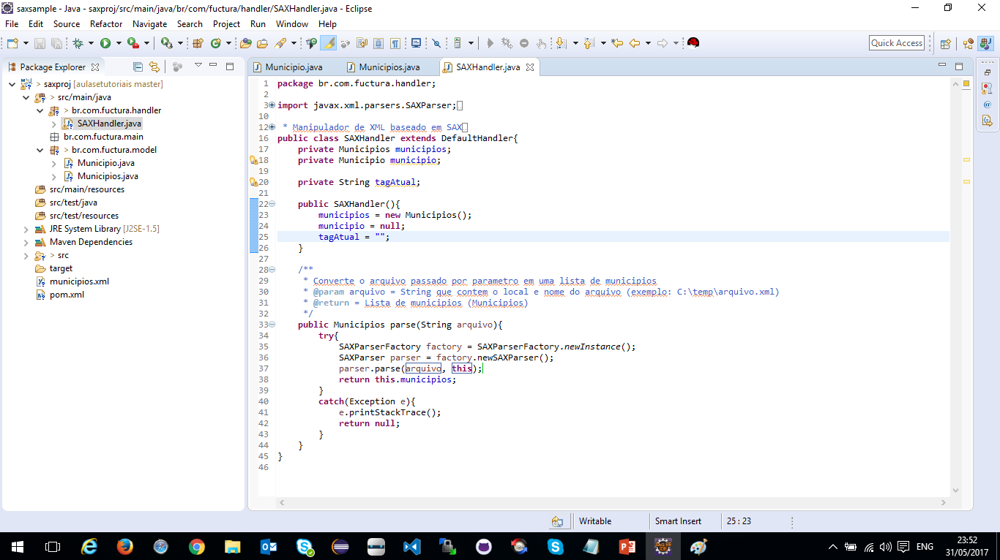
Feito isso, sobrescreva os métodos que tratam os eventos SAX da classe pai (DefaultHandler) para serem tratados em nosso handler.
Os métodos são:
public void startDocument() throws SAXException
public void startElement(String uri, String localName, String qName, Attributes attributes) throws SAXException
public void characters(char[] chars, int offset, int len) throws SAXException
public void endElement(String uri, String localName, String qName) throws SAXException
public void endDocument() throws SAXException
Crie a classe Main dentro do pacote "main" com o método "public static void main" que sera responsável por executar a aplicação
Codifique de acordo com a imagem abaixo e execute a classe Main como Java (Run As > Java Application)
Ative o log no console setando "handler.setLoggable(true);", assim, poderá ver o sentido e fluxo de leitura com detalhes. 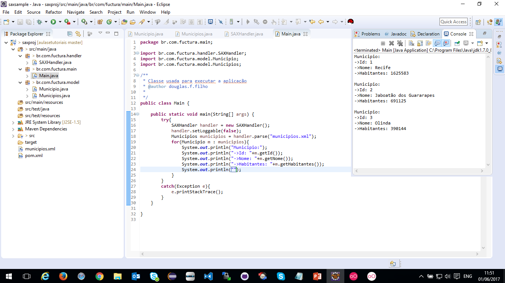
Acesse o código desta aplicação neste link.
Acompanhe as aulas e continue aprendendo como criar aplicações incríveis com o framework SpringMVC
Até mais!